In this chapter, you will execute the complete path spoofing experiment, demonstrating both the vulnerability of unencrypted MAVLink commands and the protection provided by cryptographic defenses. You will observe the drone's behavior in two critical scenarios: when navigation commands are sent in plaintext (vulnerable to spoofing) and when commands are encrypted (protected from spoofing).
This chapter brings together all the components configured in previous chapters: the AERPAW testbed, FIPS-validated cryptography, flight mission script, and command sender/receiver infrastructure. Through hands-on experimentation, you will witness firsthand how encryption transforms a vulnerable system into a secure one.
By completing this chapter, you will have successfully demonstrated a complete attack-and-defense cycle in a UAV command and control system, gaining practical insight into the critical importance of cryptographic security for autonomous vehicles.
Before starting this chapter, ensure that:
From your local machine, ensure the SSH tunnel to the OEO Console is active.
List active screen sessions:
screen -ls
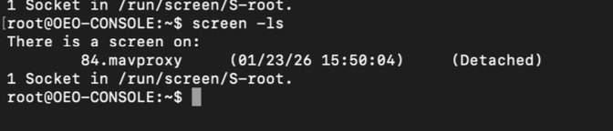
You should see the mavproxy session already running. This session manages communication with the drone's autopilot.
From the OEO Console, start the AERPAW experiment:
./startOEOConsole.sh
Then execute:
all start_experiment
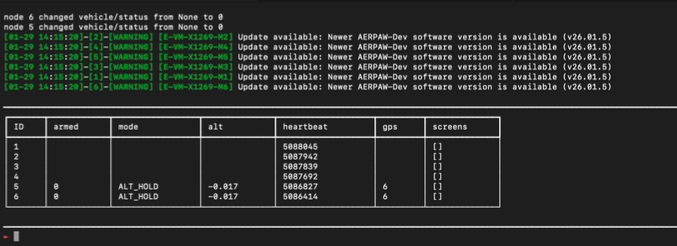
This command starts the experiment scripts on all allocated nodes. You should see confirmation that the vehicle script has been activated on the drone.
In QGroundControl, verify:
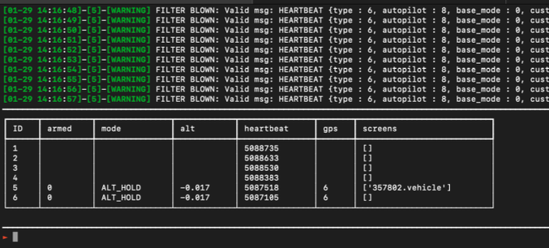
From the OEO Console, set the drone to GUIDED mode:
5 set_mode GUIDED
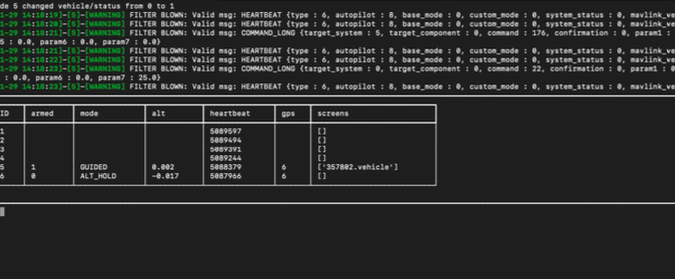
Arm the drone's motors:
5 arm
Verify in QGroundControl that the drone shows "Armed" status.
In this scenario, you will demonstrate how unencrypted navigation commands can be exploited for path spoofing attacks.
SSH into the drone and start the receiver in listening mode:
ssh -i ~/.ssh/aerpaw_id_rsa root@192.168.144.5
cd /root
env -u OPENSSL_CONF -u OPENSSL_MODULES -u OPENSSL_ENGINES python3 receiver_v2.py \
--listen 0.0.0.0 \
--port 14551 \
--aes-key ./mavlink_aes256.key \
--hmac-key ./mavlink_hmac.key
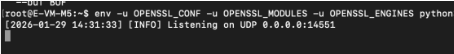
The receiver will begin listening for navigation commands on UDP port 14551.
Watch the drone in QGroundControl as it:
When the drone is approaching or has reached BS2, SSH into the base station and send a plaintext navigation command:
ssh -i ~/.ssh/aerpaw_id_rsa root@192.168.144.1
cd /root
env -u OPENSSL_CONF -u OPENSSL_MODULES -u OPENSSL_ENGINES python3 sender_v2.py \
--mode plain \
--cmd goto \
--lat 35.7302614 \
--lon -78.69866117 \
--alt 25
Monitor QGroundControl to observe:
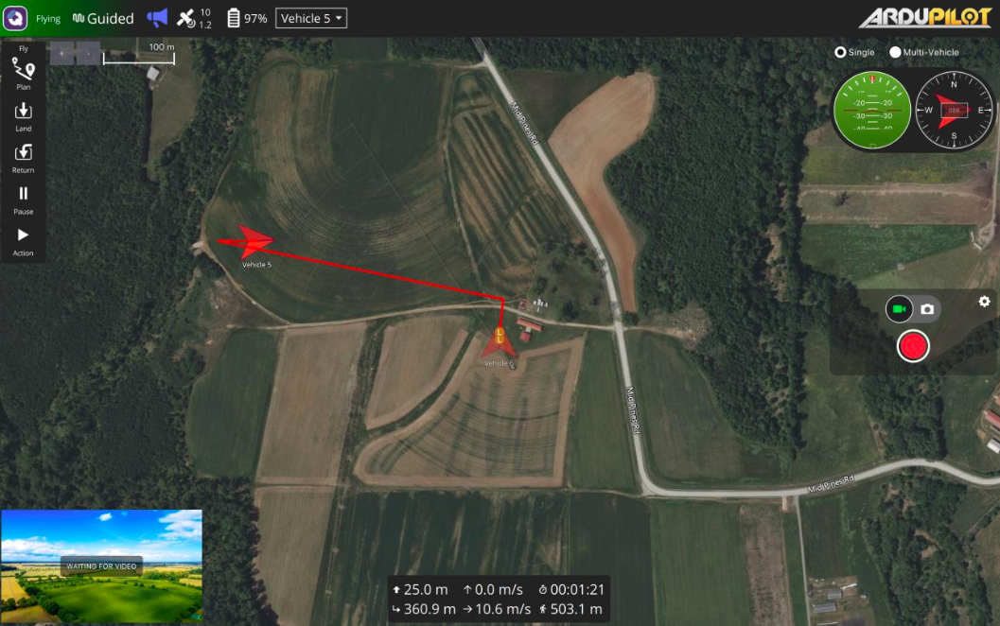
This demonstrates a successful path spoofing attack due to lack of encryption.
To demonstrate recovery, send an encrypted command:
env -u OPENSSL_CONF -u OPENSSL_MODULES -u OPENSSL_ENGINES python3 sender_v2.py \
--mode enc \
--cmd goto \
--lat 35.7302614 \
--lon -78.69866117 \
--alt 25
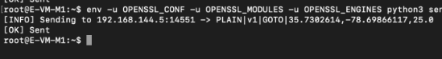
The drone should:
After the drone lands, review the flight logs:
cd /root/Results
ls -lt *.txt | head -1
cat <most_recent_log_file>
The logs will show:
In this scenario, you will demonstrate how encryption prevents path spoofing attacks.
If continuing from Scenario 1, reset the experiment:
rm /tmp/flight_cmd.txt
Restart the receiver on the drone:
env -u OPENSSL_CONF -u OPENSSL_MODULES -u OPENSSL_ENGINES python3 receiver_v2.py \
--listen 0.0.0.0 \
--port 14551 \
--aes-key ./mavlink_aes256.key \
--hmac-key ./mavlink_hmac.key
From OEO Console:
5 set_mode GUIDED
5 arm
Observe the drone takeoff and begin its mission.
When the drone approaches BS2, send an encrypted command from the base station:
env -u OPENSSL_CONF -u OPENSSL_MODULES -u OPENSSL_ENGINES python3 sender_v2.py \
--mode enc \
--cmd goto \
--lat 35.7302614 \
--lon -78.69866117 \
--alt 25
Monitor QGroundControl to observe:
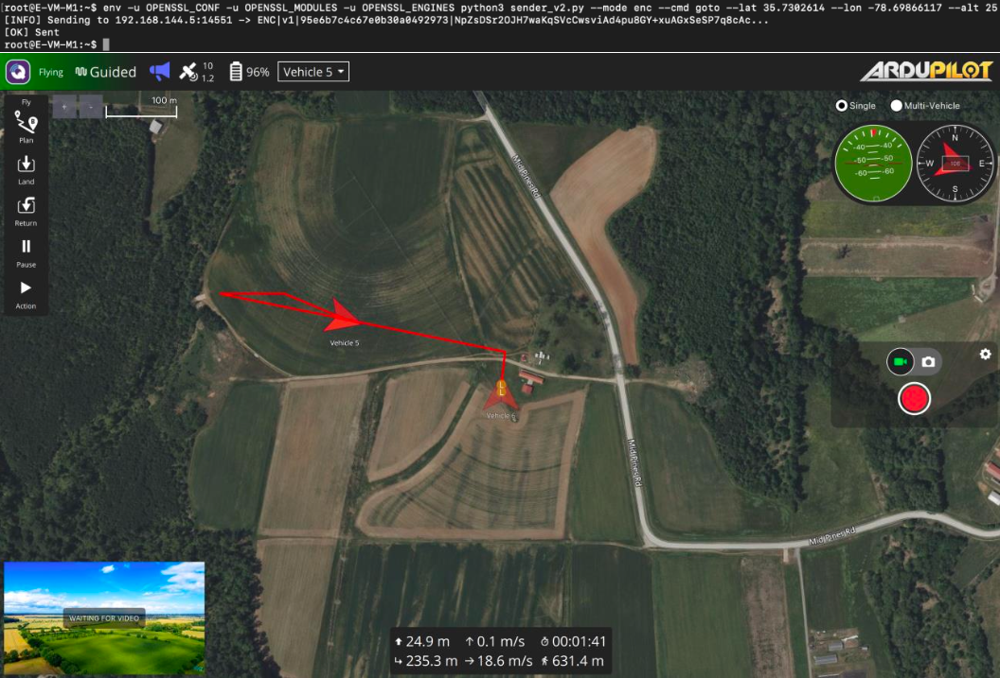
This demonstrates successful prevention of the path spoofing attack through encryption.
Examine the flight logs:
cd /root/Results
cat <most_recent_log_file>
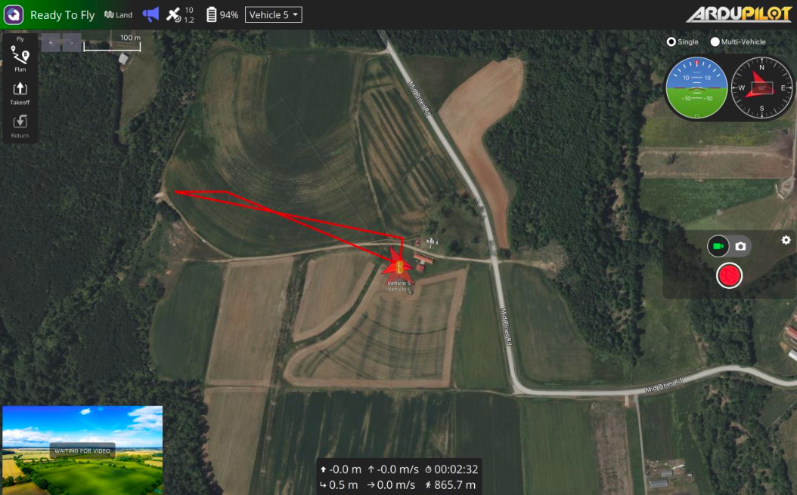
The logs will show:

During this whole process, at the drone's end we see plaintext and encrypted messages being parsed.
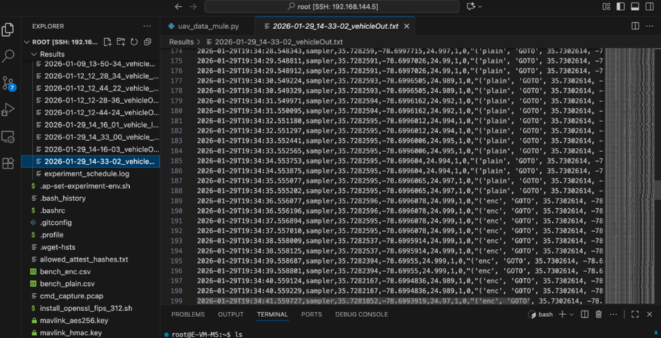
And also we can see telemetry logs as:
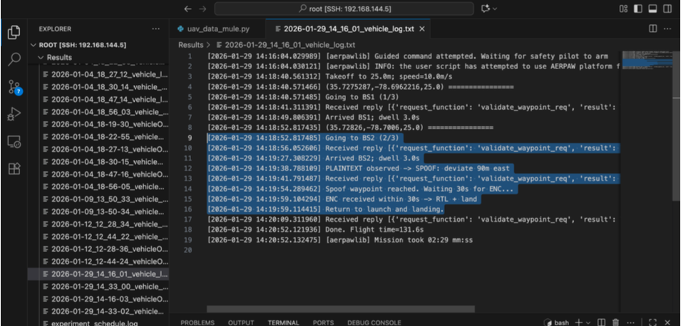
Compare the outcomes of plaintext versus encrypted command scenarios in terms of command reception, spoof detection, flight behavior, mission outcome, and security level.
The experiment demonstrates key security principles including confidentiality, integrity, attack prevention, and defense-in-depth.
In operational UAV systems, path spoofing could lead to mission failure, unauthorized activities, physical damage, regulatory violations, and safety risks. Cryptographic protection is essential for security-critical applications.
Terminate all running experiment scripts.
Gather all experimental data:
# On the drone
cd /root/Results
tar -czf experiment_results_$(date +%Y%m%d_%H%M%S).tar.gz *.txt *.csv
# Download to local machine
scp -i ~/.ssh/aerpaw_id_rsa root@192.168.144.5:/root/Results/experiment_results_*.tar.gz ./
Remove temporary command files:
rm /tmp/flight_cmd.txt
Release allocated nodes through the AERPAW portal.
Common issues and solutions for drone not taking off, receiver not detecting commands, unexpected deviations, and decryption failures.
As a result of completing this chapter, you have successfully executed a comprehensive path spoofing attack and defense experiment on a UAV system. You demonstrated how plaintext navigation commands are vulnerable to spoofing attacks that can divert the drone from its intended path. You then showed how FIPS-validated cryptographic protection prevents these attacks, ensuring the drone follows only authenticated commands from authorized ground control stations.
Through hands-on experimentation, you observed the dramatic difference between vulnerable and secure systems. You gained practical experience with cryptographic key management, secure command protocols, and the real-world implications of UAV security. This experiment provides a foundation for understanding how cryptography protects autonomous systems from adversarial manipulation.
The principles demonstrated in this lab—confidentiality, integrity, authentication, and defense-in-depth—apply broadly to all command and control systems. By mastering these concepts in the controlled AERPAW environment, you are prepared to implement security solutions for real-world autonomous systems.